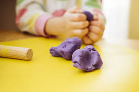
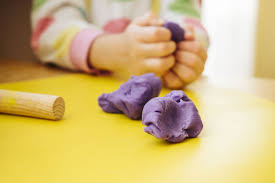
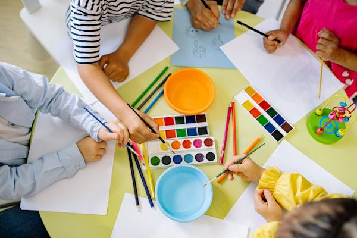
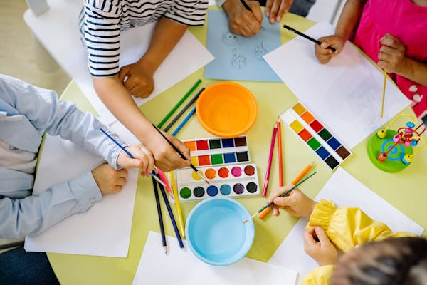
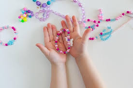
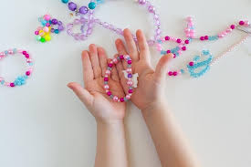

Importance of Art in Creativity
Play is an important element for the development of creativity to children since it helps a child release emotions and even create images out of ideas. It assists in self-esteeem as children watch their thoughts materialize in front of them. Art teaching also another aspect of drawing since they involve mannerism such as holding tools like brush, crayons or clay. Artistic activities help children to learn more about their creativity, thinking process and try to place forms, colors and leaving on the paper. As early as in preschool years, art fosters children’s initiation, critical analysis of that which is found in the society, nonverbal expression, and a fundamental mean in child development.
Theories and Perspectives
According to Howard Gardner’s theory of Multiple Intelligences, Visual-Spatial Intelligence is a fundamental ability which art function strengthens by raising spatial and visual thinking. Like other approaches like the Reggio Emilia approach where children are encouraged to learn through the ‘100 languages’ among which art is considered as a great language through which children can make meanings. Both views indicate the need for integrating art into school stating that creative search develops knowledge and feelings. Apart from imagination, art activities enable the child to understand ideas, make comprehensions, interpretations, and responses to his environment in a creative way.
Learning Experiences
- 0-2 years: Applying lessons through finger painting brings out the texture and colors into learning.
- 2-3 years: Many of activities which assist in shaping collages are beneficial in the development of fine motor skills.
- 3-5 years: Such murals foster teamwork and also make it possible for many students to contribute their portion of creativity.
- 6-8 years: Digital art projects involve the incorporation of the new technologies into the art projects but using the conventional methods.
Art Activities for 0-2 Age Group
Introduction
For children aged 0-2, art activities should focus on sensory exploration and fine motor skill development. Activities should be safe, simple, and engaging.
Activities
Finger Painting
Use non-toxic, washable paints and let the child explore with their hands. Provide large sheets of paper for them to create on.
Edible Playdough

 

Make playdough with edible ingredients like flour, water, and food coloring so it's safe if they put it in their mouths.
Texture Boards


Create boards with different textures (sandpaper, fabric, bubble wrap) for them to touch and explore.
Water Painting


Use a brush and water on construction paper or a chalkboard to let them see the marks they make without the mess of paint.
Resources
Provide safe and easily washable materials, such as non-toxic finger paints, edible playdough, large paper sheets, and safe brushes. Ensure all materials are age-appropriate and non-hazardous.
Art Activities for 2-3 Age Group
Introduction
For children aged 2-3, art activities should focus on developing creativity, fine motor skills, and hand-eye coordination. Activities should be fun, safe, and allow for some independence.
Activities
Color Mixing


Provide primary colors of non-toxic, washable paints and let the child mix them to discover new colors. Use large sheets of paper for painting.
Collage Making
 


Offer a variety of materials like colored paper, fabric scraps, and stickers. Let the child glue them onto a large sheet to create a collage.
Stamp Art


Use safe, washable stamps and ink pads to let the child create patterns and designs on paper.
Clay Sculpting


Provide soft, non-toxic clay for the child to mold and shape into different forms. This activity helps in developing fine motor skills.
Resources
Provide non-toxic, washable paints, large sheets of paper, safe glue, a variety of collage materials, washable stamps, and non-toxic clay. Ensure all materials are age-appropriate and safe.
Art Activities for 3-5 Age Group
Introduction
For children aged 3-5, art activities should encourage creativity, imagination, and fine motor skill development. Activities should be more structured but still allow for individual expression.
Activities
Drawing and Coloring


Provide crayons, colored pencils, and markers along with drawing paper. Encourage the child to draw and color their favorite things.
Paper Cutting and Pasting


Offer child-safe scissors and colored paper. Let the child cut shapes and paste them onto another sheet to create a picture.
Simple Sewing Projects


Provide large plastic needles and yarn. Use pre-punched cards or simple fabric shapes for the child to sew together.
Nature Collage


Collect leaves, flowers, and small sticks from outside. Let the child glue them onto paper to create a nature-themed collage.
Resources
Provide crayons, colored pencils, markers, child-safe scissors, colored paper, glue, large plastic needles, yarn, and natural materials like leaves and flowers. Ensure all materials are age-appropriate and safe.
Art Activities for 6-8 Age Group
Introduction
For children aged 6-8, art activities should focus on enhancing creativity, improving fine motor skills, and encouraging self-expression. Activities should be more complex and challenging to stimulate their growing skills.
Activities
Painting with Brushes


Provide a variety of paintbrushes and non-toxic paints. Encourage the child to paint scenes, objects, or abstract art on canvas or thick paper.
Origami


Introduce the child to simple origami projects using colorful paper. This activity helps in developing patience and precision.
Bead Jewelry Making

 

Provide beads and strings for the child to create necklaces, bracelets, and other jewelry. This activity enhances fine motor skills and creativity.
Drawing from Nature


Encourage the child to draw plants, animals, and other natural objects. This activity helps in observation skills and appreciation of nature.
Resources
Provide non-toxic paints, a variety of paintbrushes, canvas or thick paper, colorful origami paper, beads, strings, and drawing supplies. Ensure all materials are age-appropriate and safe.